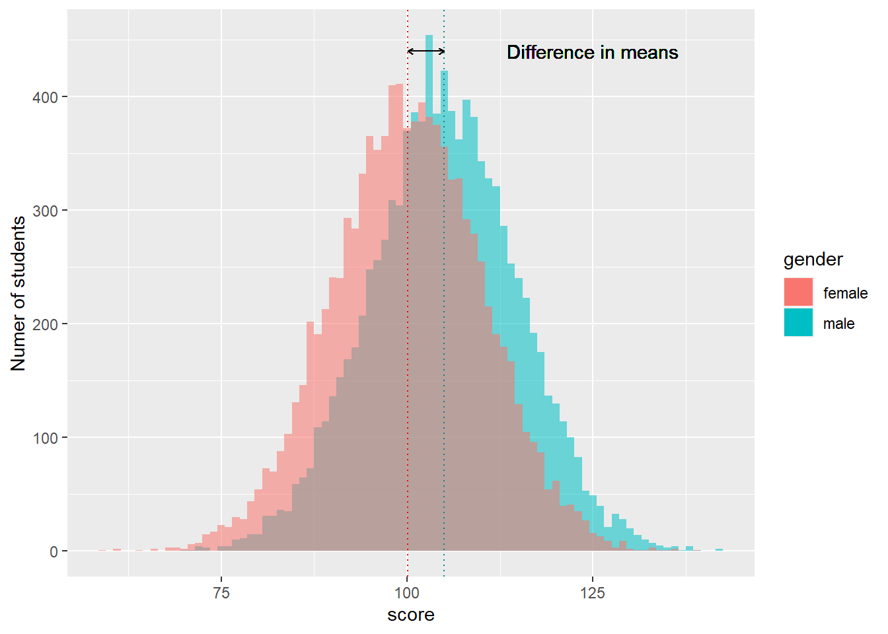
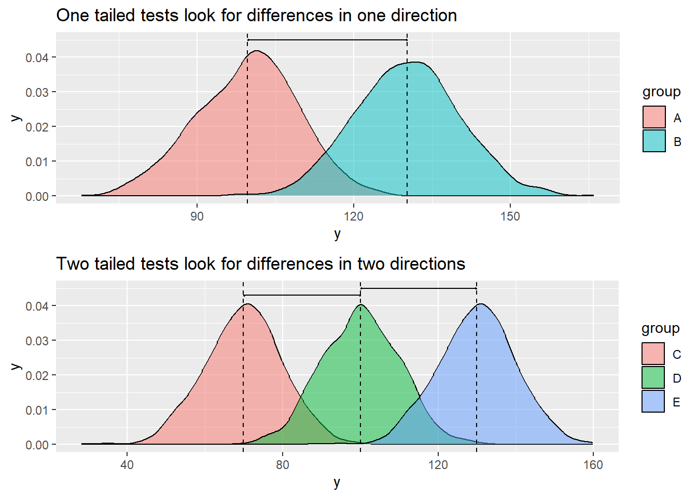
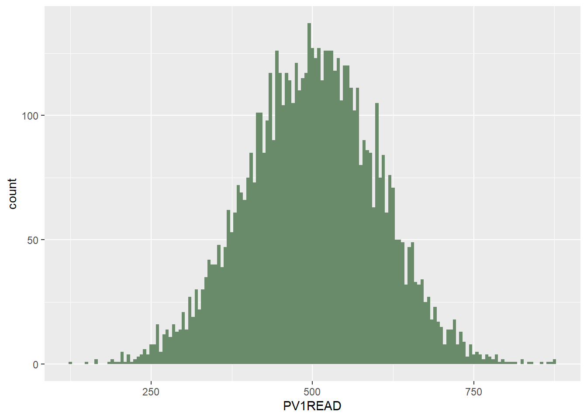
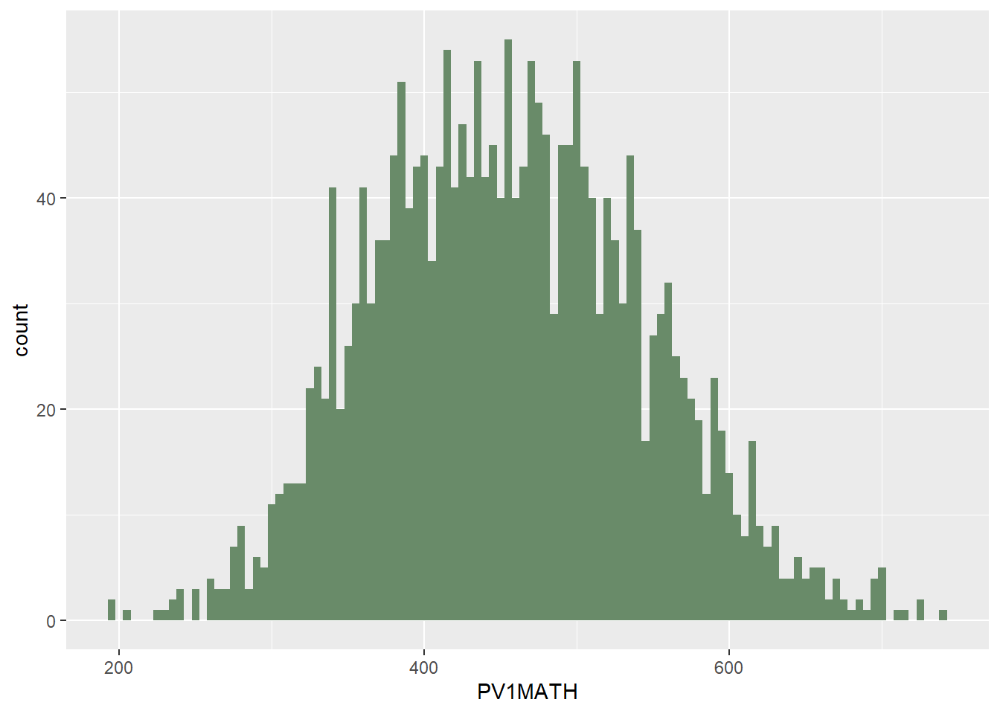
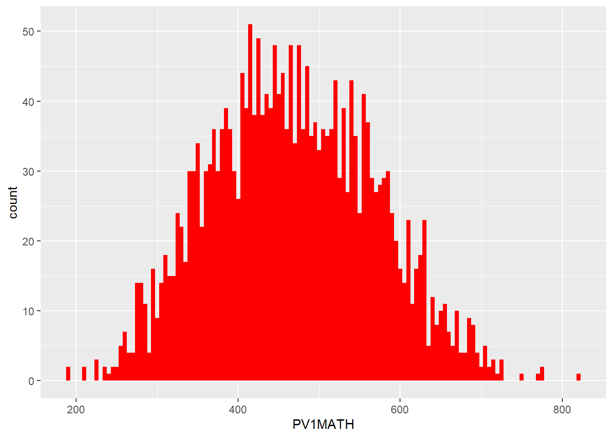

Before the session, please read chapter 7, introduction to t-tests, in Geher and Hall (2014)available here.
1.2 Pre-session task
2 T-tests
T-tests are statistical tests used to determine if the mean of a sample is different to a presumed population mean, or if the means of two different samples are different to one another.
Here are some examples in educational research of when t-tests might be applied:
A school wants to measure whether there is a statistical difference between Year 11’s Progress 8 scores and the national average( which is approximately 0 on average in England). A t-test is used to determine if there is a statistical difference between the mean of the Year 11’s progress 8 scores in the school and the national average.
A researcher implements an intervention with a random sample of pupils from a school. A second random sample is also taken, which is called the control group. After a period of time of teaching, one with the intervention and without, the pupils are tested. A t-test is performed to see if there is a statistical difference between the mean of the control group and the mean of the intervention group.
A teacher wants to see how well a class is able to recall knowledge learned 6 months after they are given a test. The pupils are given similar test questions before and after the period. A t-test is used to see if there is a statistical difference between test scores in the first test and in the test 6 months later.
2.1 Conditions of t-tests
There are six conditions required for a t-test to be used:
a) the population data is continuous;
b) the sample size is small;
c) the sample was randomly sampled;
d) the variance of the data in each group is similar (homogeneity of variance);
e) the population data follows a normally distribution;
f) the observations are independent of one another.
Note
Due to the robustness of the t-test some of the conditions can be adjusted. For example,
Discrete interval data can be used (so long as there is sufficient granularity);
The sample data may be approximately normally distributed;
Variances can be unequal (this is covered by Welch’s t-test);
Sample sizes can be large (this does not affect the validity of the test, but with a known population variance a z-test may be more appropriate).
Note
A rule of thumb researchers use is that if the ratio of variances of the larger sample to the smaller is less than 4, then a t-test can be used.
2.2 Hypothesis Testing and t-tests
When using the t-test, we are testing the null hypothesis that there is no difference between the mean of a sample and, depending on the type of t-test, either the hypothesised value of the population mean or the mean of another sample. In other words, if it is equal.
show the code
# Create random data sets of 10,000 boys' and girls' scoresgirlscores <-as.data.frame(rnorm(n =10000, mean =100, sd =10))girlscores <- girlscores %>%mutate(gender="female") %>%rename(Scores="rnorm(n = 10000, mean = 100, sd = 10)")boysscores <-as.data.frame(rnorm(n =10000, mean =105, sd =10))boysscores <- boysscores %>%mutate(gender="male") %>%rename(Scores="rnorm(n = 10000, mean = 105, sd = 10)")# Plot the datatotalscores <-rbind(boysscores, girlscores)ggplot(totalscores) +geom_histogram(data = boysscores,aes(x = Scores, fill = gender, alpha=0.5), binwidth =1) +geom_histogram(data=girlscores,aes(x = Scores, fill = gender, alpha=0.5), binwidth =1) +geom_vline(xintercept =mean(boysscores$Scores), colour="turquoise4", linetype =3) +# Add a vertical line for the mean scoresgeom_vline(xintercept =mean(girlscores$Scores), colour="red2", linetype=3) +geom_segment(aes(x =mean(boysscores$Scores), y=440, # Add arrow between meansxend =mean(girlscores$Scores),yend =440), arrow =arrow(length =unit(0.01, "npc"), ends ="both")) +geom_text(x =125, y =440, label ="Difference in means") +# Add text labelxlab("score") +ylab("Numer of students") +guides(alpha="none") # Remove alpha from the legend

The alternative hypothesis then depends on whether we are testing if the mean of a sample is less than, greater than, or not equal to the hypothesised value of the population mean or mean of another sample. In other words, if it less than or greater than, then it’s a one-tailed test (since it is only considering one direction of the mean), and if it’s not equal to, then it’s a two-tailed test (since it is considering both sides of the mean).
Code
library(gridExtra) # for grid.arrangeplot1 <-data.frame(y =rnorm(n =1000, mean =100, sd =10), group ="A")plot2 <-data.frame(y =rnorm(n =1000, mean =130, sd =10), group ="B")plot3 <-data.frame(y =rnorm(n =1000, mean =70, sd =10), group ="C")plot4 <-data.frame(y =rnorm(n =1000, mean =100, sd =10), group ="D")plot5 <- plot3plot5$group<-"E"plot5$y <- plot5$y +60onetail <-rbind(plot1, plot2)twotail <-rbind(plot3, plot4, plot5)p1<-ggplot(onetail, aes(x = y, fill = group)) +geom_density(alpha =0.5) +geom_segment(aes(x =mean(plot1$y), y =0.045, # Add an arrow between meansxend =mean(plot2$y),yend =0.045), arrow =arrow(length =unit(0.01, "npc"), ends ="both"))+geom_vline(xintercept =mean(plot1$y), linetype="dashed")+geom_vline(xintercept =mean(plot2$y), linetype="dashed")+ggtitle("One tailed tests look for differences in one direction")p2 <-ggplot(twotail, aes(x = y, fill = group)) +geom_density(alpha =0.5) +geom_segment(aes(x =mean(plot3$y), y =0.043, # Add an arrow between meansxend =mean(plot4$y),yend =0.043), arrow =arrow(length =unit(0.01, "npc"), ends ="both")) +geom_segment(aes(x =mean(plot4$y), y=0.045, # Add an arrow between meansxend =mean(plot5$y),yend =0.045), arrow =arrow(length =unit(0.01, "npc"), ends ="both"))+geom_vline(xintercept =mean(plot3$y), linetype="dashed")+geom_vline(xintercept =mean(plot4$y), linetype="dashed")+geom_vline(xintercept =mean(plot5$y), linetype="dashed")+ggtitle("Two tailed tests look for differences in two directions")grid.arrange(p1, p2)

To determine the outcome of the t-test we need to decide a sufficiently low enough probability (p-value) that, if it’s below this, then it is unlikely that the null hypothesis is true and so we reject the null hypothesis. Typically, this is set to 0.05, or 5%, but in other cases it might be as high as 0.1 or as low as 0.01 or 0.001 depending on the circumstances. Therefore, if the p-value is greater than 0.05 we accept the null hypothesis and if it less than 0.05 we reject the null hypothesis and accept the alternative hypothesis.
When considering the number of tails, we then need to consider the p-value here also. If we set the overall probability to be 0.05 for the threshold that we reject the null hypothesis, then for a one-tailed test we compare our result with 0.05. However, with a two-tailed test, since we are looking at a two-tailed test, then the probability of each of the tails is 0.025 and therefore we compare our value with 0.025 instead.
Conventionally, we use 0.05 (1 in 20) as the cut off for statistical significance (a convention that has been much critiqued e.g. (Cohen 1994; Baker 2016)).
2.3 Types of t-test
There are a two main types of t-tests:
One sample t-test - checks if the mean of a sample is different to a hypothesised value for the population mean.
Two sample t-test - checks if the mean of one sample is different to the mean of another sample. There are two main types:
Paired tests - compares the means of measurements from the same individual or object (e.g. in a pre- and post-test - the comparison of means and before and after scores compares the same student’s scores in the first test with the second).
Unpaired t-tests - compares the means of two unrelated groups (for example, are the mean science scores of boys and girls in a school different).
For more information on t-tests, see chapter 13, in Navaro’s Learning Statistics with R.
2.4 One Sample t-tests
One sample t-tests are used to compare the mean of a sample of a data set with a value. This value is usually a known population mean or a theoretical population mean depending on the context of the test.
For a two-tailed test, the hypotheses are as follows
Null hypothesis: sample mean = population mean;
Alternative hypothesis: sample mean ≠ population mean.
For a one-tailed test, the hypotheses are as follows (depending on the direction of the test)
Either,
Null hypothesis: sample mean = population mean;
Alternative hypothesis: sample mean > population mean.
Or,
Null hypothesis: sample mean = population mean;
Alternative hypothesis: sample mean < population mean.
Example: Are Females’ Reading Scores in the UK the Same or Different on Average to the UK Average?
Let’s look at an example of where we might want to consider a sample, in this case females’ reading scores in the UK, with a presumed population mean, the average reading score in the UK. This is a presumed mean, since we don’t know the true population mean here, but we do know the average reading score from the PISA data, which is 494 (taken from PISA 2022).
Following the steps for performing a hypothesis test, we will start by selecting the appropriate test. Since we are comparing the mean of one sample with a population mean, then we need to use a one sample t-test.
First, you will need to load the PISA data:
# Load PISA DataPISA_2022 <-read_parquet(r"[add the link to your data file]")
To ensure we can use this test we need to make sure the conditions are met. Since PISA tests are constructed in a way which means they are normally distributed, then it is likely our sample is also normally distributed. However, it is good practice to check the distribution using a histogram (or qqplot) at the very least, and where appropriate, a normality test. Due to the large sample size normality testing isn’t usually required, so we will just consider a histogram (or qqplot) here.
line 5 - put reading scores (PV1READ) on the x-axis
6
line 6 - use geom_histogram to create a histogram. We can define that the reading data is divided into bins of width 5 points (binwidth = 5) and set the colour of the bars (fill = "darkseagreen4")

We can see from the histogram that the sample is approximately normally distributed (as it follows a bell shaped curve).
Next, we state the null and alternative hypotheses. Since we are determining whether the average reading score is the same or different, we are using a two-tailed test. This gives us the following hypotheses:
Null hypothesis: mean reading score for females in UK = mean reading score in UK
Alternative hypothesis: mean reading score for females in UK ≠ mean reading score in UK
Having set up the hypotheses, we now need to calculate the probability of the null hypothesis being true. To do this, we use R’s t.test function and compare the scores for females in reading in the UK with the OECD average score for reading, which is defined as 476 (OECD website).
One Sample t-test
data: PISA_2022_Read_Girls$PV1READ
t = 19.064, df = 6396, p-value < 2.2e-16
alternative hypothesis: true mean is not equal to 476
95 percent confidence interval:
497.7143 502.6918
sample estimates:
mean of x
500.203
We can see from the result that we get a p-value of < 2.2e-16, which is very small. As this is lower than 0.025 (for a two-tailed test) we reject the null hypothesis.
Therefore, we accept the null hypothesis that the average reading score for females in the UK is different to the overall average reading score in the UK. Looking at the average stated in the t-test, the average score is higher for girls, at 500.23.
2.5 Unpaired Two Sample t-tests
Unpaired two sample t-tests are used to compare the means of two, unconnected samples. They are unconnected in the sense that the samples taken are independent and are measurements of two unrelated groups.
For a two-tailed test, the hypotheses are as follows
Null hypothesis: sample mean of first group = sample mean of second group;
Alternative hypothesis: sample mean of first group ≠ sample mean of second group.
For a one-tailed test, the hypotheses are as follows (depending on the direction of the test)
Either,
Null hypothesis: sample mean of first group = sample mean of second group;
Alternative hypothesis: sample mean of first group > sample mean of second group.
Or,
Null hypothesis: sample mean of first group = sample mean of second group;
Alternative hypothesis: sample mean of first group < sample mean of second group.
Example: Are Males’ and Females’ Maths Scores in the USA the Same or Different to One Another?
Let’s say we want to discern if the average maths score differ for males and females in the USA. We want to test to see if there is a statistical difference between the means.
Following the steps for performing a hypothesis test, we will start by selecting the appropriate test. Since we are comparing the means of two, unrelated samples (since they are the measurements of two different groups that are not connected) then we use an unpaired t-test.
Again, we need to check if the groups are approximately normally distributed so check the histogram of each group.
# Create a US maths subsetsUSMATH<-PISA_2022 %>%2select(CNT, PV1MATH,ST004D01T) %>%3filter(CNT =="United States")USMATHGIRLS <- USMATH %>%4filter(ST004D01T =="Female")USMATHBOYS <- USMATH %>%6filter(ST004D01T =="Male")# Plot histogram# For girls7ggplot(data = USMATHGIRLS,8aes(x = PV1MATH)) +geom_histogram(binwidth =5, fill ="darkseagreen4")
2
line 2 - select the variables of interest, country, maths scores, and gender
3
line 3 - filter for the US
4
line 4 - create a new data frame USMATHGIRLS of the data for girls
6
line 7 - pass the data to ggplot
7
line 8 - put maths scores (PV1MATH) on the x-axis
8
line 9 - use geom_histogram to create a histogram. We can define that the reading data is divided into bins of width 5 points (binwidth = 5) and set the colour of the bars (fill = "darkseagreen4")

# For boysggplot(data=USMATHBOYS,aes(x=PV1MATH)) +geom_histogram(binwidth =5, fill ="red")

Again, we can see both samples of males and females are approximately normally distributed.
Next, we state the null and alternative hypotheses. Since we are determining whether the average maths scores are the same or different, we are using a two-tailed test. This gives us the following hypotheses:
Null hypothesis: mean maths score for males in US = mean maths score for females in UK
Alternative hypothesis: mean maths score for males in US ≠ mean maths score for females in UK.
Next, we calculate the probability of the null hypothesis being true. As before, we use R’s t.test function and compare the mean scores of males and females in the US.
# Plot a two-sided, unpaired t-testt.test(PV1MATH ~ ST004D01T, data = USMATH, paired =FALSE, alternative ="two.sided")
Welch Two Sample t-test
data: PV1MATH by ST004D01T
t = -3.9455, df = 4499.5, p-value = 8.086e-05
alternative hypothesis: true difference in means between group Female and group Male is not equal to 0
95 percent confidence interval:
-16.59477 -5.57744
sample estimates:
mean in group Female mean in group Male
456.1248 467.2109
We can see from the t-test result that the p-value returned is 8.086e-05. As this is lower than 0.025 (for a two-tailed test) we reject the null hypothesis.
As such, we accept the alternative hypothesis that the average scores for males and females in the US are statistically different, with the average score for males being higher than average score for females.
2.6 Paired Two Sample t-tests
Paired two sample t-tests compare the mean of a sample to the mean of a related sample. Usually, this is where there is a repeated measure taken of the same individuals or objects, such as a pre and post test. It can also be used for comparing a pair of measurements taken of the same individuals or objects.
For a two-tailed test, the hypotheses are as follows
Null hypothesis: sample mean of first group = sample mean of second group;
Alternative hypothesis: sample mean of first group ≠ sample mean of second group.
For a one-tailed test, the hypotheses are as follows (depending on the direction of the test)
Either,
Null hypothesis: sample mean of first group = sample mean of second group;
Alternative hypothesis: sample mean of first group > sample mean of second group.
Or,
Null hypothesis: sample mean of first group = sample mean of second group;
Alternative hypothesis: sample mean of first group < sample mean of second group.
Example: Are there differences between science and maths scores on average in the UK?
Let’s say we want to compare the science and maths scores of students in the UK to see if there is a difference in their average score or not.
Following the steps for performing a hypothesis test, we will start by selecting the appropriate test. Since we are comparing the means of two, related samples (since they are two measurements of the same students, therefore related) then we use a paired t-test.
Again, we need to check if the groups are approximately normally distributed so check the histogram of each group.
# Create a US maths subsetsUKMATH<-PISA_2022 %>%select(CNT, PV1MATH,ST004D01T) %>%filter(CNT =="United Kingdom")UKSCIENCE<-PISA_2022 %>%select(CNT, PV1SCIE, ST004D01T) %>%filter(CNT =="United Kingdom")# Plot histogramggplot(data = UKMATH,aes(x = PV1MATH)) +geom_histogram(binwidth =5, fill ="darkseagreen4")
ggplot(data = UKSCIENCE,aes(x = PV1SCIE)) +geom_histogram(binwidth =5, fill ="red")
Again, we can see the two samples are approximately distributed so can use the t-test.
Next, we state the null and alternative hypotheses. Since we are determining whether the average maths score is the same or different to the average science score, we are using a two-tailed test. This gives us the following hypotheses:
Null hypothesis: mean maths score in UK = mean science score in UK
Alternative hypothesis: mean maths score in UK ≠ mean science score in UK
Having set up the hypotheses, we now need to calculate the probability of the null hypothesis being true. Again, we use R’s t.test function and compare the average maths scores with the average science scores.
# Perform a two-sided, paired t-testt.test(UKMATH$PV1MATH, UKSCIENCE$PV1SCIE, paired =TRUE, alternative ="two.sided")
Paired t-test
data: UKMATH$PV1MATH and UKSCIENCE$PV1SCIE
t = -21.651, df = 12971, p-value < 2.2e-16
alternative hypothesis: true mean difference is not equal to 0
95 percent confidence interval:
-10.602602 -8.842174
sample estimates:
mean difference
-9.722388
We return a p-value of < 2.2e-16, which is less than 0.025 (for a two-tailed test), meaning we reject the null hypothesis that there is no difference between the average score in maths and science.
Therefore, we accept the alternative hypothesis that there is a difference in scores in maths and science in the UK. This difference is approximately 1.5 points.
::: call-out tip
In R, there are often multiple ways of doing the same tests. Note with t.test there are two forms you can use, depending on the format of the data you want to test.
First, in the example above, we had two data frames, for math scores, and science scores, so we can pass two data frames to t.test.
# Carry out a two-sided, paired t-testt.test(UKMATH$PV1MATH, UKSCIENCE$PV1SCIE, paired =TRUE, alternative ="two.sided")
Paired t-test
data: UKMATH$PV1MATH and UKSCIENCE$PV1SCIE
t = -21.651, df = 12971, p-value < 2.2e-16
alternative hypothesis: true mean difference is not equal to 0
95 percent confidence interval:
-10.602602 -8.842174
sample estimates:
mean difference
-9.722388
Alternatively, our data might be in one data frame, with a variable indicating the two groups. For example, if we wanted to perform a test of UK science scores, we might create a single data frame in which the two groups are indicated by the column ST004D01T, gender. In that case, we can use the ~ operator to do a t.test on the PISAUK$PV1SCIE (i.e. the science scores) by (~) gender.
UKSci<-PISA_2022 %>%select(CNT, PV1SCIE, ST004D01T) %>%filter(CNT=="United Kingdom")# Plot a two-sided, unpaired t-testt.test(UKSci$PV1SCIE ~ ST004D01T, data = UKSci,paired =FALSE, alternative ="two.sided")
Welch Two Sample t-test
data: UKSci$PV1SCIE by ST004D01T
t = -3.9298, df = 12964, p-value = 8.547e-05
alternative hypothesis: true difference in means between group Female and group Male is not equal to 0
95 percent confidence interval:
-10.553500 -3.529142
sample estimates:
mean in group Female mean in group Male
488.6962 495.7375
:::
3 Anova (multiple t-tests)
We have performed t-tests of the difference in mathematics scores between boys and girls in the UK. We may now want to perform the same t-test for all the countries in the sample. This can create a problem. Remember that a p-value report the probability that an outcome is due to chance. The more times we repeat a t-test, the more likely we are to see an effect, even when none-exists.
To avoid potential artefacts from doing multiple t-tests, when we want to compute the means of more than two groups, we use an anova (analysis of variance) test.
To determine if there is a statistically significant difference between groups we run an anova calculation, using the aov function in R. The dependent variable is the one we are interested in explaining, the independent variables are the factors we think might explain the variance.
For example, we used t-tests to look at differences in scores between a pair of countries (e.g the UK and the US). We can now compare across all the countires.
We pass the function the data we wish to focus on (PV1MATH) and then indicate we wish to look for variation in the PV1MATH, by CNT. We then summarise the result to get a table.
line 2 - select the variables of interest, country, and maths scores
3
line 3 - use aov to perform the anova calculation. We set the data we are passing (data = ALLPISAMATH) and set that we want to determine the variance in maths scores by country (PV1MATH ~ CNT) - we put the output into a new variable resaov
4
line 4 - we produce a summary of the output summary(resaov)
5
line 5 - print the result
Df Sum Sq Mean Sq F value Pr(>F)
CNT 79 1.811e+09 22927902 3089 <2e-16 ***
Residuals 613664 4.554e+09 7421
---
Signif. codes: 0 '***' 0.001 '**' 0.01 '*' 0.05 '.' 0.1 ' ' 1
looks to determine if there is a difference in the variance across countires. After determining any variation from those two variables, any remaining variation is associated with residuals - you can think of this as the unexplained variation that isn’t associated with the vectors we specified (i.e. the country).
First, look at the Pr(>F) column. This is a test of significance and reports if the groups in that row show statistically significant variation. In our case, country returns Pr(>F) <2e-16 *** - which is over 0.05. This suggests there are significant differences across countries.
This is not terribly interesting so far(!) - but we can do two post-hoc tests (i.e. tests after the first test, to find out the effect size and between which countries differences exist)
3.1 Eta-squared
Now knowing that there are significant differences between the two class groups, we can next determine how much variation in the test score is explained by class. To do this we calculate a variable called eta-squared.
Eta-squared gives the proportion of variance explained by each variable. The eta squared function is in the package lsr so we will install lsr, and then use the result of our anova (resaov) to calculate the eta squared variable using the function etaSquared. To report the value of eta as a percentage we need to multiply the output of eta by 100.
Eta squared tells us the proportion of the total variance that is explained by a variable (you can also think of it as an effect size). An eta squared value of 1 indicates all the variance of a sample is explain by some variable and 0 means the variable is not responsible for any of the observed variance. We can multiply the eta-squared score by 100 to get a value for the percentage of variance explained.
The percentage of variance explained is a useful figure. For example, it has been reported that schools only account for 14% of the variance in progress 8 scores, whilst family explains 43% (Wilkinson, Bryson, and Stokes (2018)).
The important column here is the eta.sq column - it tells us that the country explains 28% of the variance in test scores. (The second column contains information about partial eta-squared, which we won’t go into, but are used when the results of each measure are not independent i.e. one result influences another).
Note
As a rule of thumb, a percentage variance explained of 1% is considered small, 6% medium and 14% and more large
3.2 Tukey’s HSD
When an anova test reports that are some statistically significant differences between groups, it does not imply there are statistically significant differences between all subgroups. For example, if the anova reports statistically significant differences by age, statistically significant differences might exist between 11, 12 and 13-year old students, but not between 13 and 14-year olds.
We can use an additional anova test, Tukey’s Honest Significant Difference test (or Tukey’s HSD for short), to find out which pairs of subgroups have statistically significant differences in means.
Consider the question: Are there statistically significant differences in the variance of science scores of the UK, US, France and Germany? To determine if such differences exist, we create a new subset for those countries’ science scores, and then run an anova test by country, reporting the eta squared value.
line 2 - select the variables of interest, country, and maths scores
3
line 3 - filter for countries of interest. Note a shorter way to do the filter is filter(CNT %in% c("United Kingdom", "United States", "Germany", "France"))
5
line 6 - produce a summary of resaov
6
line 8 - use etaSquared(resaov) to find the eta squared value. We convert this to a data frame so we can perform the next steps
8
line 10 - print the result
Df Sum Sq Mean Sq F value Pr(>F)
CNT 3 993358 331119 30.24 <2e-16 ***
Residuals 30406 332902262 10949
---
Signif. codes: 0 '***' 0.001 '**' 0.01 '*' 0.05 '.' 0.1 ' ' 1
eta.sq eta.sq.part
CNT 0.2975057 0.2975057
The anova results tell us there are significant differences between the countries, which account for 0.3 % of variance in scores. We can then run a Tukey HSD test to determine which countries have significant differences between mean scores.
TukeyHSD(resaov)
Tukey multiple comparisons of means
95% family-wise confidence level
Fit: aov(formula = PV1SCIE ~ CNT, data = PISAMULTI)
$CNT
diff lwr upr p adj
France-Germany -13.871343 -18.613536 -9.129150 0.0000000
United Kingdom-Germany -2.989572 -7.159141 1.179997 0.2536226
United States-Germany 2.995899 -2.266149 8.257948 0.4602611
United Kingdom-France 10.881771 6.851391 14.912151 0.0000000
United States-France 16.867243 11.714786 22.019699 0.0000000
United States-United Kingdom 5.985472 1.354627 10.616316 0.0049773
From that we get a table with p values (p adj) for different pairs of countries. Note that these are below 0.05 for France-Germany, UK-France, US-UK and US-France, but greater than 0.05 for UK-Germany, US-Germany. So we can conclude there are significant differences in science scores between France-Germany, UK-France, US-UK and US-France but not between the UK and Germany, and the US and Germany.
4 Seminar Tasks
4.1 Task 1 Choice of tests
Consider the following scenarios. Which (if any) of the t-tests would be most of appropriate, including whether it would be a one or two tailed test.
Note
One and two-tailed tests
Remember that a one-tailed test only looks for differences in one direction from the mean (for example, that one sample has a higher mean than the other). A two-tailed tests tests for the possibility of the means of the two groups being higher or lower than each other.
An educational researcher wants to test a teaching approach with a group of 12 students to see if an intervention increases performance in their year 6 SATs results. Pupils are given a SATS paper before the intervention and again after. The results of these are normalised and then compared.
A teacher wants to see if their pupils’ GCSE computer science test scores are in line with the national average or not. The tests are out of 180 marks.
The DfE want to compare uptake of STEM subjects pre and post pandemic to see if there has been any change in the percentage of students studying at least one STEM subject for A level.
A school wants to compare salaries of staff between this academic year and last academic year to see whether there has been a significant increase.
The same school as in d) wants to compare salaries of support staff and teaching staff to see if there is a significant difference.
A researcher wants to find out how much time pupils spend looking at screens during lesson time, to see if there is a difference between year 7 and year 10 students. 10 pupils in year 7 and 10 pupils in year 10 are randomly selected across a school and observed throughout a school day in November. The times are recorded to the nearest minute.
A business manager wants to check if the financial expenditure on STEM teachers per year is similar to the national average (based on average numbers of pupils on role)
Answer
# Answers# a) An educational researcher wants to test a teaching approach with a group of 12 students to see if an intervention increases performance in their year 6 SATs results. Pupils are given a SATS paper before the intervention and again after. The results of these are normalised and then compared.# Paired (because we compare pairs of results (before and after) for the same student) and two-tailed (because we are interested in the means being higher or lower)# b) A teacher wants to see if their pupils' GCSE computer science test scores are in line with the national average or not. The tests are out of 180 marks.# Unpaired (the teacher compares their students with another pool) and two-tailed (because we are interested in the means being higher or lower)# c) The DfE want to compare uptake of STEM subjects pre and post pandemic to see if there has been any change in the percentage of students studying at least one STEM subject for A level.# Unpaired (the students taking STEM subjects before and after the pandemic will be different individuals from different cohorts) and two-tailed (because we are interested in the means being higher or lower)# d) A school wants to compare salaries of staff between this academic year and last academic year to see whether there has been a significant increase.# Possibly paired (if the staff body has remained the same), and two-tailed (because we are interested in the means being higher or lower)# e) The same school as in d) wants to compare salaries of support staff and teaching staff to see if there is a significant difference.# Unpaired (because there are two different groups, teachers and support staff), and two-tailed (because we are interested in the mean salaries being higher or lower)# f) A researcher wants to find out how much time pupils spend looking at screens during lesson time, to see if there is a difference between year 7 and year 10 students. 10 pupils in year 7 and 10 pupils in year 10 are randomly selected across a school and observed throughout a school day in November. The times are recorded to the nearest minute.# Unpaired (because there are two different groups, Y7 and Y10), and two-tailed (because we are interested in the means of times being higher or lower)# g) A business manager wants to check if the financial expenditure on STEM teachers per year is similar to the national average (based on average numbers of pupils on role)# Unpaired (because there are two different groups, the school and the national cohort), and two-tailed (because we are interested in the expenditure means being higher or lower)
4.2 Task 2 Performing t-tests
Use the PISA dataset and the gender ST004D01T and PV1MATH (Math score) variables to perform a two-sided, unpaired t-test to determine if boys and girls perform differently on the test in the UK. Before performing the test, check for the normality of the data, and check for equal variance.
Answer
# Are there differences between the mean scores of UK boys and girls in PISA mathematics?# Select the gender (ST004D01T) and maths score columns (PV1MATH)# Filter the data to select UK responsesMaleUK <- PISA_2022 %>%select(CNT, ST004D01T, PV1MATH) %>%filter(CNT =='United Kingdom', ST004D01T =='Male')FemaleUK <- PISA_2022 %>%select(CNT, ST004D01T, PV1MATH) %>%filter(CNT =='United Kingdom', ST004D01T =='Female')# The conditions to do a t-test include that the data are normally distributed# and there is homogeneity (similarity) of the variances (the squared standard deviations)# Let us check the conditions are met by calculating first if the data sets are normally# distributed using a qq plotqqnorm(MaleUK$PV1MATH)qqline(MaleUK$PV1MATH, col ="red")qqnorm(FemaleUK$PV1MATH)qqline(FemaleUK$PV1MATH, col ="red")# The plots produces relatively straight lines so the distributions can be assumed to be normal## We will then check the variances of the two data setsVarM <-var(MaleUK$PV1MATH, na.rm =TRUE)VarF <-var(FemaleUK$PV1MATH, na.rm =TRUE)VarM / VarF# The variance ratio is close to 1 (1.1)# So our two conditions are met and can we can perform the t-test# Plot a two-sided, unpaired t-testt.test(MaleUK$PV1MATH, FemaleUK$PV1MATH, paired =FALSE, alternative ="two.sided")# The p-value is <0.05 (4.061e-08) suggesting there are statistically# differences between boys and girls
Choose a different country of interest to compare performance in males and females in that country
Answer
# Are there differences between the mean scores of boys and girls in Japan PISA mathematics?## Select the gender (ST004D01T) and math score columns (PV1MATH)# Filter the data to select UK responsesMaleJapan <- PISA_2022 %>%select(CNT, ST004D01T, PV1MATH) %>%filter(CNT =='Japan', ST004D01T =='Male')FemaleJapan <- PISA_2022 %>%select(CNT, ST004D01T, PV1MATH) %>%filter(CNT =='Japan', ST004D01T =='Female')# The conditions to do a t-test include that the data are normally distributedqqnorm(MaleJapan$PV1MATH)qqline(MaleJapan$PV1MATH, col ="red")qqnorm(FemaleJapan$PV1MATH)qqline(FemaleJapan$PV1MATH, col ="red")# The plots produces relatively straight lines so the distributions can be # assumed to be normal## We will then check the variances of the two data setsVarM<-var(MaleJapan$PV1MATH, na.rm =TRUE)VarF<-var(FemaleJapan$PV1MATH, na.rm =TRUE)VarM/VarF# The variance ratio is close to 1 (1.26)# So our two conditions are met and can we can perform the t-test# Create a Japan Math subsetCHIMATH <- PISA_2022 %>%select(CNT, PV1MATH, ST004D01T) %>%filter(CNT =="Japan")# Plot a two-sided, unpaired t-testt.test(MaleJapan$PV1MATH, FemaleJapan$PV1MATH, paired =FALSE, alternative ="two.sided")# The p-value is <0.025 (0.0004128) suggesting there are statistically# differences between boys and girls in mathematics in Japan
Now try to compare the performance of males and females in Maths in all the OECD countries in the PISA data. You may need to think about how to do this using R without repeating the test for each country.
Answer
MaleOECD <- PISA_2022 %>%select(OECD, ST004D01T, PV1MATH) %>%filter(OECD =='Yes', ST004D01T =='Male')FemaleOECD <- PISA_2022 %>%select(OECD, ST004D01T, PV1MATH) %>%filter(OECD =='Yes', ST004D01T =='Female')qqnorm(MaleOECD$PV1MATH)qqline(MaleOECD$PV1MATH, col ="red")qqnorm(FemaleOECD$PV1MATH)qqline(FemaleOECD$PV1MATH, col ="red")# The plots produces relatively straight lines so the distributions can be assumed to be normal# We will then check the variances of the two data setsVarM <-var(MaleOECD$PV1MATH, na.rm =TRUE)VarF <-var(FemaleOECD$PV1MATH, na.rm =TRUE)VarM / VarF# The variance ratio is close to 1 (1.18)# So our two conditions are met and can we can perform the t-test# The p-value is <0.05 (<2.2e-16) suggesting there are statistically# differences between boys and girlsOECD <- PISA_2022 %>%select(OECD, ST004D01T, PV1MATH) %>%filter(OECD=='Yes')t.test(MaleOECD$PV1MATH, FemaleOECD$PV1MATH, paired =FALSE, alternative ="two.sided")
Are there statistically significant differences in mean HOMEPOS scores of boys and girls in the UK?
Answer
MaleUK <- PISA_2022 %>%select(ST004D01T, HOMEPOS) %>%filter(ST004D01T =='Male')FemaleUK <- PISA_2022 %>%select(ST004D01T, HOMEPOS) %>%filter(ST004D01T =='Female')qqnorm(MaleUK$HOMEPOS)qqline(MaleUK$HOMEPOS, col ="red")qqnorm(FemaleUK$HOMEPOS)qqline(FemaleUK$HOMEPOS, col ="red")# The plots here are somewhat skewed which might suggest not performing the test# We will then check the variances of the two data setsVarM <-var(MaleUK$HOMEPOS, na.rm =TRUE)VarF <-var(FemaleUK$HOMEPOS, na.rm =TRUE)VarM / VarF# The variance ratio is close to 1 (1.1)# So our two conditions are met and can we can perform the t-testHOMEPOS <- PISA_2022 %>%select(HOMEPOS, ST004D01T, CNT) %>%filter(CNT =='United Kingdom')t.test(MaleUK$HOMEPOS, FemaleUK$HOMEPOS, paired =FALSE, alternative ="two.sided")# p-value < 2.2e-16 so there are statistically significant differences between boys' and girls' reported wealth in the UK
4.3 Task 3 Multiple t-tests with anova
For the UK, France, Thailand, and the US determine if there are statistically significant differences in variation in mathematics scores.
Tukey multiple comparisons of means
95% family-wise confidence level
Fit: aov(formula = PV1MATH ~ CNT, data = PISAMULTI)
$CNT
diff lwr upr p adj
United Kingdom-France 14.447781 10.80031 18.095251 0.0000000
Thailand-France -53.254801 -57.21819 -49.291415 0.0000000
United States-France -6.221682 -10.88462 -1.558739 0.0034071
Thailand-United Kingdom -67.702582 -71.09801 -64.307154 0.0000000
United States-United Kingdom -20.669463 -24.86035 -16.478575 0.0000000
United States-Thailand 47.033119 42.56457 51.501668 0.0000000
answer
# There are statistically significant differences in mathematics scores for all pairs of countries
For the UK, are there statistically significant differences in reading score by students who speak different languages (LANGN)
answer
# Create a data frame with Reading and school type variables, filte for the uKUKLangRead<-PISA_2022 %>%select(CNT, PV1READ, LANGN) %>%filter(CNT =="United Kingdom")# Perform an anova test for reading scores, school typeresaov<-aov(PV1READ ~ LANGN, data = UKLangRead)sumresaov<-summary(resaov)sumresaov
Df Sum Sq Mean Sq F value Pr(>F)
LANGN 9 3653767 405974 37.84 <2e-16 ***
Residuals 12962 139057822 10728
---
Signif. codes: 0 '***' 0.001 '**' 0.01 '*' 0.05 '.' 0.1 ' ' 1
answer
# Calculate eta squaredeta<-as.data.frame(etaSquared(resaov))eta<-eta*100eta
eta.sq eta.sq.part
LANGN 2.560245 2.560245
answer
# Perform the post-hoc Tukey test to determine where signficiant differences lieTukeyHSD(resaov)
Tukey multiple comparisons of means
95% family-wise confidence level
Fit: aov(formula = PV1READ ~ LANGN, data = UKLangRead)
$LANGN
diff
English-Scots 62.84014574
Welsh-Scots -12.93526998
Scottish Gaelic-Scots 57.85860281
Irish-Scots -33.91929005
Other European languages (QSC)-Scots 51.39604436
Ulster Scots-Scots 20.20519166
A non-European Union language-Scots 23.91065526
Another language (QUK)-Scots 51.46413115
Missing-Scots 31.77456179
Welsh-English -75.77541571
lwr
English-Scots 45.851374
Welsh-Scots -45.517499
Scottish Gaelic-Scots -67.131182
Irish-Scots -98.058036
Other European languages (QSC)-Scots 20.170235
Ulster Scots-Scots -33.622454
A non-European Union language-Scots -9.506853
Another language (QUK)-Scots 31.207521
Missing-Scots 13.175387
Welsh-English -103.973070
upr
English-Scots 79.828918
Welsh-Scots 19.646959
Scottish Gaelic-Scots 182.848388
Irish-Scots 30.219456
Other European languages (QSC)-Scots 82.621854
Ulster Scots-Scots 74.032838
A non-European Union language-Scots 57.328163
Another language (QUK)-Scots 71.720741
Missing-Scots 50.373737
Welsh-English -47.577761
p adj
English-Scots 0.0000000
Welsh-Scots 0.9629532
Scottish Gaelic-Scots 0.9059913
Irish-Scots 0.8106915
Other European languages (QSC)-Scots 0.0000086
Ulster Scots-Scots 0.9743577
A non-European Union language-Scots 0.4128165
Another language (QUK)-Scots 0.0000000
Missing-Scots 0.0000029
Welsh-English 0.0000000
[ reached getOption("max.print") -- omitted 35 rows ]
answer
# There are statistically significant differences between Pre-vocational and general, and vocational and pre-vocational, but not between vocational and general.
For the UK, use ifelse on the HOMEPOS variable to create categories for four quartiles (divide the data into top; upper-mid; lower-mid; and bottom). Use anova to determine between which groups there are statistically significant differences in science scores
::: call-out tip Hint: You can use quantiles <- quantile(UKSci$PV1SCIE, prob=c(.25,.5,.75), na.rm=TRUE) to give the values of PV1SCIE that account for 25%, 50% and 75% of the responses.
answer
# Create a data frame of UK science scores and Wealth data# Drop levels to remove other countriesUKSci <- PISA_2022 %>%select(CNT, PV1SCIE, HOMEPOS) %>%filter(CNT =="United Kingdom") %>%na.omit() %>%droplevels() %>%select(PV1SCIE, HOMEPOS)# Find the cut of points for 25%, 50% and 75% (quantiles) of HOMEPOSquantiles <-quantile(UKSci$HOMEPOS, prob =c(.25,.5,.75), na.rm=TRUE)# Note the results are stored in quantiles[1] (25%), quantiles[2] # (50%), quantiles[3] (75%)# Mutate the HOMEPOS column, using ifelse, to substitute the labels, "Bottom",# "Mid", "upper-mid" and "top" for the quantiles.UKSci<-UKSci%>%mutate(HOMEPOS =ifelse(HOMEPOS<quantiles[1], "Bottom", ifelse(HOMEPOS < quantiles[2], "Lower-mid",ifelse(HOMEPOS < quantiles[3],"Upper-mid","Top"))))# Perform the avova for science scores by wealth, categories into 4 groupsresaov<-aov(PV1SCIE ~ HOMEPOS, data = UKSci)sumresaov<-summary(resaov)sumresaov
Df Sum Sq Mean Sq F value Pr(>F)
HOMEPOS 3 13965393 4655131 484.5 <2e-16 ***
Residuals 11483 110321087 9607
---
Signif. codes: 0 '***' 0.001 '**' 0.01 '*' 0.05 '.' 0.1 ' ' 1
answer
# p is <2e-16 so significant differences exist between wealth groups on science# scores# perform the post hoc Tukey test to find out where statistically signficant differences existTukeyHSD(resaov)
Is it possible to replicate the results using the PISA 2018 data set? Make a graph showing the difference in male and female PV1MATH results for each country CNT. To do this we are going to have to:
work out the mean() maths score PV1MATH for each country CNT and gender ST004D01T grouping, call this meanmath and create a new data frame to store this
from this data frame, create two new data frames, one for males only and one for females only
rename() (see §renaming columns) the meanmath score in each data frame to male_mean and female_mean
bind the data frames together using using column bind function cbind(<male_df>, <female_df>) and store this in a new dataframe called Mathgendergap. NOTE: cbind only accepts tables with different names, so you’ll need to select select(CNT, male_mean) from the male dataframe and select(female_mean) from the female dataframe.
use mutate (see §mutate) to calculate the difference in male and female mean maths scores for each country
The above code doesn’t include the t-test results for each country, to do this we need to run some more complex code, you can see how it works below:
code
# A fuller recreation with t-tests# conduct a ttest across countries on a specified columnlibrary(broom)ttest_by_country <-function(data, column = PV1MATH){# work out which countries have full 30+ datasets for this ttest countries <- data %>%ungroup() %>%filter(!is.na({{column}})) %>%# {{column}} allows you to change the field of focusselect(CNT, ST004D01T, {{column}}) %>%group_by(CNT) %>%filter(n() >30) %>%pull(CNT) %>%# the pull command returns the column as a vector, not a tableunique()# list the countries that don't meet that criteriamessage("dropping: ", setdiff(unique(data$CNT), countries), " as too few entries for ttest")# reduce the dataset to only those countries with 30+ entries data <- data %>%filter(CNT %in% countries)# for each country in this new dataset perform a set of calculations test_result <-map_df(unique(data$CNT),function(x){# make a subset of the data just for that country df <- data %>%filter(CNT == x)# get the results pull({{column}}) for females and males as two separate vectors f_data <- df %>%filter(ST004D01T =="Female") %>%pull({{column}}) m_data <- df %>%filter(ST004D01T =="Male") %>%pull({{column}})# tell us the number of resultsmessage(x, " f:", length(f_data), " m:", length(m_data))# work out the means of each vector f_mean <-mean(f_data) m_mean <-mean(m_data)t.test(m_data, f_data) %>%# conduct a ttest on the male and female resultstidy() %>%# convert the ttest result into a dataframemutate(CNT = x, # add columns to record the countryf_mean = f_mean, # the mean female gradem_mean = m_mean, # the mean male gradegender_diff = m_mean - f_mean, # the difference between the twoprop_male =length(m_data) / (length(m_data) +length(f_data)))# and the proportion who are male in the dataset })return(test_result)}plot_ttest_by_country <-function(data, column ="PV1MATH"){ggplot(data %>%mutate(sig = p.value <0.05),aes(x=reorder(CNT, gender_diff), y=gender_diff, colour=sig))+geom_point(aes(size = prop_male)) +geom_hline(yintercept =0, lty=2) +# add a line on 0coord_flip() +# rotate the graphxlab("country") +ylab("mean(male - female)") +ggtitle(paste("gender differences for:", column)) +theme(axis.text.x =element_text(angle =90, vjust =0.5,hjust=1, size=5))}# run the first function using 2018 data and the PV1MATH columnttest_results <-ttest_by_country(PISA_2022, PV1MATH)#plot the resultsplot_ttest_by_country(ttest_results, "PV1MATH")
code
# Alternatively, you could run the following:# run a ttest for each country# ttest_results <- PISA_2022 %>%# filter(!is.na(PV1MATH)) %>% # Vietnam no results?!# select(CNT, ST004D01T, PV1MATH) %>%# group_by(CNT) %>%# nest(data = c(ST004D01T, PV1MATH)) %>% #create a dataframe of gender results for each country# summarise(tt = map(data, function(df){ # apply a ttest to each country# t.test(df %>% filter(ST004D01T == "Female") %$% PV1MATH,# df %>% filter(ST004D01T == "Male") %$% PV1MATH) %>%# tidy() # convert results into a dataframe# })) %>%# unnest(tt)
What issues are there with using a t-test for the context given in the paper?
How do your findings from question 3 and the 2018 dataset compare with those in the paper? Are there any differences or disagreements with your findings?
How could the paper be improved?
6 Doing t-tests in R
You can find the code from the video below:
Show the Code
# Introduction to t-tests in R## Download data from /Users/k1765032/Library/CloudStorage/GoogleDrive-richardandrewbrock@gmail.com/.shortcut-targets-by-id/1c3CkaEBOICzepArDfjQUP34W2BYhFjM4/PISR/Data/PISA/subset/Students_2018_RBDP_none_levels.rds# You want the file: Students_2018_RBDP_none_levels.rds# and place in your own file system# change loc to load the data directly. Loading into R might take a few minutesinstall.packages("nortest")library(tidyverse)library(nortest)loc <-"/Users/k1765032/Library/CloudStorage/GoogleDrive-richardandrewbrock@gmail.com/.shortcut-targets-by-id/1c3CkaEBOICzepArDfjQUP34W2BYhFjM4/PISR/Data/PISA/subset/Students_2022_RBDP_none_levels.rds"PISA_2022 <-read_rds(loc)# Are there differences between the mean scores of UK boys and girls in PISA mathematics?## Select the gender (ST004D01T) and math score columns (PV1MATH)# Filter the data to select UK responsesMaleUK <- PISA_2022 %>%select(CNT, ST004D01T, PV1MATH) %>%filter(CNT =='United Kingdom') %>%filter(ST004D01T =='Male')FemaleUK <- PISA_2022 %>%select(CNT, ST004D01T, PV1MATH) %>%filter(CNT =='United Kingdom') %>%filter(ST004D01T =='Female')# The conditions to do a t-test include that the data are normally distributed# and there is homogeneity (similarity) of the variances (the squared standard deviations)# Let us check the conditions are met by calculating first if the data sets are normally# distributed using the Pearson test of normality from the nortest packagepearson.test(as.numeric(MaleUK$PV1MATH))pearson.test(as.numeric(FemaleUK$PV1MATH))# The p-values are over 0.05 so both distriburtions are normal# Pearson chi-square normality test## data: as.numeric(MaleUK$PV1MATH)# P = 75.714, p-value = 0.1936# Pearson chi-square normality test## data: as.numeric(FemaleUK$PV1MATH)# P = 74.06, p-value = 0.2589## We will then check the variances of the two data setsVarM <-var(MaleUK$PV1MATH)VarF <-var(FemaleUK$PV1MATH)VarM/VarF# The variance ratio is close to 1 (1.1)# So our two conditions are met and can we can perform the t-testt.test(MaleUK$PV1MATH, FemaleUK$PV1MATH)# The p-value is <0.05 (4.061e-08) suggesting there are statistically# differences between boys and girls
References
Baker, M. 2016. “Statisticians Issue Warning over Misuse of p Values.”Nature.
Cohen, Jacob. 1994. “The Earth Is Round (p<. 05).”American Psychologist 49 (12): 997.
Geher, Glenn, and Sara Hall. 2014. Straightforward Statistics: Understanding the Tools of Research. Oxford University Press, USA.
Wilkinson, David, Alex Bryson, and Lucy Stokes. 2018. “Assessing the Variance in Pupil Attainment: How Important Is the School Attended?”National Institute Economic Review 243 (1): R4–16. https://docs.iza.org/dp11372.pdf.